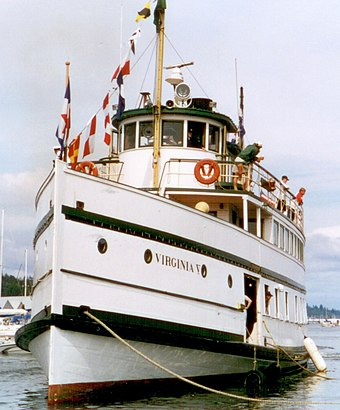

About
The Puget Sound mosquito fleet was a multitude of private transportation companies running smaller passenger and freight boats on Puget Sound and nearby waterways and rivers. This large group of steamers and sternwheelers plied the waters of Puget Sound, stopping at every waterfront dock. The historical period defining the beginning and end of the mosquito fleet is ambiguous, but the peak of activity occurred between the First and Second World Wars.

Legacy
The Washington State Ferries system now runs on many of the routes of the mosquito fleet, of which the fine steamer Virginia V, newly restored, is one of the last remaining vessels. The oldest remaining vessel is the motor vessel Carlisle II, built in Bellingham in 1917 and still in regular revenue service between Bremerton and Port Orchard for Kitsap Transit. Of the other little ships, Gordon Newell, one of their greatest historians, wrote:
The little ships had much of humanity in them. Few had great adventures, for they had their humble, daily tasks to do in their own small world ... from Flattery to Olympia. They worked hard and well, making many friends. They seldom hurt anyone. They managed to keep their particular sort of jaunty, wind-swept beauty until the end. 91
As a modern reminder of the little ships, in 2001, Kitsap County inventoried all the many landings and docks of the mosquito fleet on Bainbridge Island and the Kitsap Peninsula, and developed the Kitsap County Mosquito Fleet Trail for bicycles and foot traffic. Presently, Kitsap Transit operates a passenger-only ferry between Port Orchard and Bremerton. The Carlisle II has been designated as a floating museum. It is one of few mosquito fleet-era ferries operating on Puget Sound today. It runs every half-hour beginning on the hour and half-hour on the Port Orchard side and 15 and 45 minutes after the hour on the Bremerton side. One-way fare is $2.00.
Decline
As automobile ownership rose and highways and roads improved, passenger travel fell off. Many boats were converted to automobile ferries, the first being the Bailey Gatzert. Others were eventually just abandoned on beaches or never repaired after a wreck or a mechanical breakdown. Some, like the Magnolia, were converted into towboats. 88 Others had different fates. Arcadia, the last passenger vessel (capacity 275 passengers, 100 tons freight) operating between Tacoma and upper Puget Sound landings under the command of Capt. Bernt Bertson, was sold to the federal government for use as a tender for the federal prison on McNeil Island, where she was renamed J.E. Overlade. This was not the end of Arcadia, however, as in 1959, she was bought back from the federal government by Puget Sound Excursion Lines, renamed Virginia VI, and placed in the excursion business with the Virginia V then under the same ownership.
A single "last voyage" of the mosquito fleet never occurred, in contrast to the famous last runs of the Georgie Burton in 1947 on the Columbia or the Moyie on Kootenay Lake in 1957. Races were staged up through the 1950s, and a few revivals on a few runs, even as late as the Second World War. By the late 1920s, though, automobiles and highways had filled the transportation needs that steamboats had once supplied, and in 1930, the Tacoma made her last run on the Seattle-Tacoma route, under the command of Captain Everett D. Coffin, the only skipper she had ever had. This marked the real end of commercial passenger activity for the steamboats. Newell and Williamson documented the occasion:
The Tacoma and the Indianapolis passed a little south of Three Tree Point. ... Capt. Coffin pulled down a window and leaned out in the driving rain. The Indianapolis floated by, a dozen squares of light topped by a star. She spoke; three long, lingering blasts. ... Capt. Coffin reached for his own whistle cord. Three long blasts. And he let the last blast die away slowly, until it was only a moan in the throat of the whistle. “That's the last time we pass each other,” he said.
When Tacoma arrived at her dock in Tacoma harbor that last night, every ship in the port blew three blasts on their whistles as a salute. Andrew Foss, the owner of the great Foss tug concern, sent Foss No. 17 to help Tacoma make her landing, though two years had passed since Tacoma could afford the help of a tug. As she left that last time on her return to Seattle, Tacoma passed the hull of the Greyhound, once the fastest boat on the sound and now, minus her upper works, engines, and sternwheel, in her last service as a mudscow.
Possible Return?
Occasionally, talk of restoring the mosquito fleet revives, which in modern parlance has become known as the "passenger-only ferry", although apparently not much has come of these ideas, as they seem to be dependent on public funding or subsidies. (Although not necessarily a subsidy, since they were getting paid the going rate for the work, the first mosquito fleet was heavily supported by mail carriage contracts.)
Some movement towards this may be happening. In August 2007, the city of Kingston received a $3.5 million grant from the federal government to cover at least some of the costs of building a terminal and a passenger-only ferry between Kingston and Seattle.
In April 2007, the countywide The King County Ferry District was formed to expand transportation options for county residents through passenger ferry services. The district board is composed of all nine members of the Metropolitan King County Council. On July 1, 2008, the KCFD took over the operations of two existing passenger-ferry services and considered up to five new routes. In 2015 the district was absorbed into the county Department of Transportation.
Kitsap County voted in 2016 to subsidize three passenger ferries to Seattle. One, a low wake catamaran started service in July 2017 with six round trips daily, three in the morning and three in the afternoon. Service from Kingston to downtown Seattle began November 26, 2018 with three round trips each in the morning and afternoon. Previously riders from Kingston arrived in Edmonds and must take ground transportation from Edmonds to Seattle. One more route from Southworth to downtown Seattle began in 2020. [better source needed] These join two other mosquito routes, Bremerton to Port Orchard and Bremerton to Annapolis.
The Case for the Return
Traffic in Bremerton increases as more people move in and it becomes more widely travelled. Traffic by Naval Base Kitsap gets especially crowded and can take 45 minutes to get through a strip less than a mile long at some times of the day. Having more methods of transportation through these areas will allow for less congestion of most travelled walkways and allow for more options for pedestrians as well.